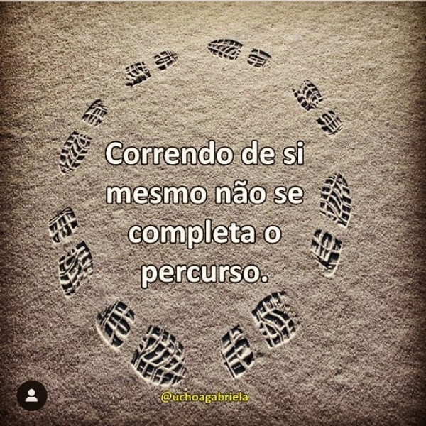
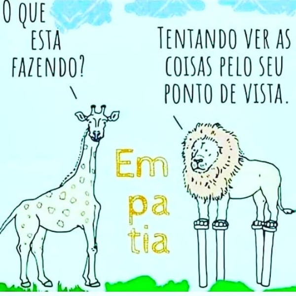
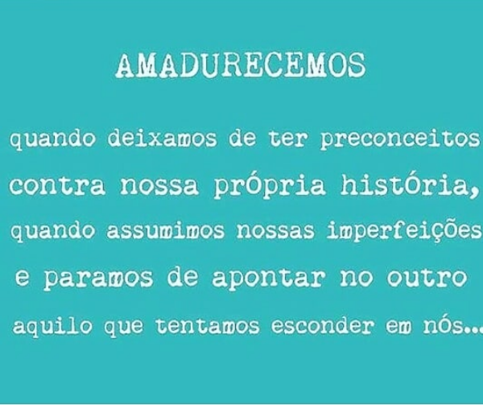
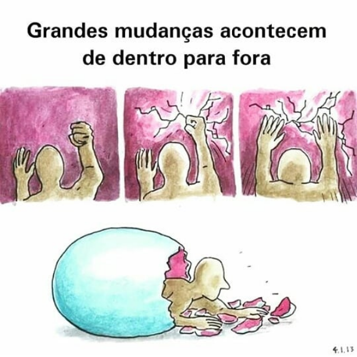
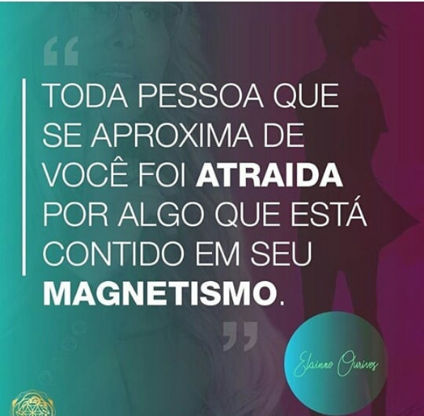

Bianca Insigths!!
As vezes tudo que precisamos é começar...
E o ponta pé inicial pode vir de um insigth...
Uma epifania, uma clareza subta na mente,no intelecto de um individuo;
Insigth é aquele estalo !!
Você é o unico responsavel por tudo que acontece em sua vida, e o único culpado...
Entretanto a culpa nao vai te levar a lugar nenhum...
Pra começar assuma a responsabilidade...

O proximo passo é a diciplina, pois seu compromisso com você mesmo deve ser diario...
Se hoje vc repete tudo que fez ontem, fatalmente amanha vc estará lamentando as mesmas tristezas de hoje.




Todo crecimento é um processo... cada pessoa tem seu tempo...
Mas vc pode crecer muito mais do que imagina...
Impossivel é só uma questão de ponto de vista...
Acredite em si mesmo... Vai lá e faz...